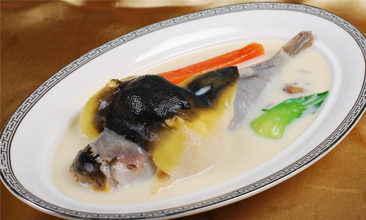
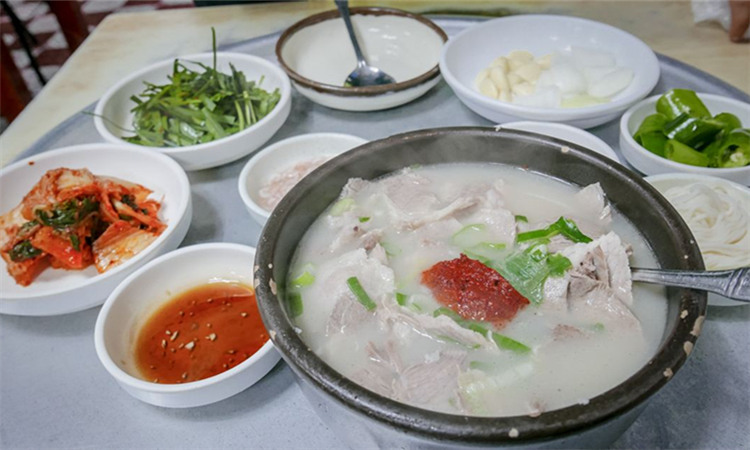

当地美食
#河豚汤（복국）#
釜山河豚宴，用上两条河豚，由头到尾，煎皮拆骨，便可化成五道精彩菜式。鱼肉丰腴充满嚼劲，爽甜中又带着泡菜的香辣和蔬菜的清甜。

图：釜山河豚汤
河豚汤是釜山河豚宴最重要的主角。这里的人们有一个特别的解酒方法，就是宿醉时来一碗河豚汤。
据说，釜山与日本的福冈很接近，或许是受了日本文化影响，釜山人也流行吃河豚。釜山的河豚专门店，有些甚至会开辟一层，二十四小时营业，让夜归的、宿醉的、返早班的随时来喝一碗河豚汤。
#猪肉汤（돼지국밥）#
汤饭是韩国国民中传统又地道的平民饮食，韩国的汤饭种类很多，而釜山尤其以汤饭的美味闻名。
猪肉汤饭以猪肉为主料，在米饭中铺上一层葱、蒜、黄豆芽和猪肉，混以猪肉汤汁熬制。釜山汤饭会加入虾酱或者生拌韭菜，以去除猪肉腥味。同时使汤味更加鲜美，如此细致的特别处理，成为釜山猪肉汤饭在普通汤饭中脱颖而出的理由。
猪肉汤饭因为味道独特而成为釜山招牌之一，甚至有一条猪肉汤饭街，街上卖的全是猪肉汤饭。猪肉汤饭对人体大有裨益。可以强壮身体与骨头，治疗水俣病与矿物性药中毒，同时强壮皮肤，对青春痘、雀斑、黑痣等颇有效果。

图：韩国猪肉汤饭
#小麦面（밀면）#
小麦面是釜山地区的风味美食之一。小麦面是小麦粉和红薯淀粉做出来的，很劲道。汤则是由鸡肉，水果以及各种药材熬制的，很爽口。小釜身边的中国朋友相比冷面更喜欢小麦面。
釜山人吃小麦面的时候会再点上一盘蒸包，这样的最佳组合下次你也不妨来品尝一下吧。
#章鱼牛肠火锅#
很多人来韩国玩的时候吃过牛肠火锅，但是你在釜山吃过章鱼牛肠火锅吗？
牛肠的上面铺上满满的章鱼还有虾仁，海鲜汁渗入锅底与牛肠融合，不仅汤汁更鲜美，牛肠也不肥腻。

图：章鱼牛肠火锅
#东莱葱饼#
釜山东莱葱质脆味浓，爽甜不涩，是葱中极品。长于釜山的温泉乡东莱，用它来做的东莱葱饼，是釜山的传统名物。葱饼是民间小吃，做法本简单利落，下油把铁镬烧热，放葱煎香，铺满大量虾、鱿鱼等时令海鲜和少量牛肉。
葱饼在海滨东莱非常受欢迎，传统用料为糯米与粳米，其后改良为小麦粉与粳米，得到更为普遍的流传。
#生鱼片#
海鲜是釜山当地的主要特之一，其中生鱼片是最受欢迎的食物。生鱼片在釜山的很多地方都能买到，相比其他城市，价格也不贵。一顿经典的生鱼片晚餐，首先会上一道开胃菜，比如章鱼刺身。
主材是一大平盘切成薄片的生鱼片，鱼肉要蘸上辣椒酱或是混有芥末的酱油，最后通常是米饭和一锅辣味的鱼汤。
南浦洞对面的札嘎其鱼市场是釜山规模最大的鱼产品批发零售中心，也是吃生鱼片的好地方，在这以品尝到新鲜价廉的生鱼片。
图：韩国生鱼片
觅食好去处
#札嘎其市场生鱼片部#
札嘎其市场生鱼片部是位于釜山札嘎其市场入口，不少明星也曾来店光顾。来到釜山怎么可以不品尝海鲜呢，这里主打生鱼片，生鱼片分为小中大3种分量，顾客可以根据自己的食量进行选择。
另外还有烤海鲜、海鲜汤和韩国传统饮食拌饭等，菜单上有汉语以及配图，即使不懂汉语也可以轻松点菜。
地 址：釜山中区南浦洞4街37-1
营业时间：02：00-22：00
#釜山南浦洞小吃街#
著名的BIFF广场各小巷内有着著名的美食小吃一条街，囊括了辣年糕、烤栗子，特别是这里还有别的地方没有的香辣凉拌鱿鱼、韭菜海鲜煎饼以及内馅有向日葵籽的糖饼等釜山特色的街头小吃。
地址：釜山中区南浦洞
#Mango Six#
图：Mango Six
看过《绅士的品格》的人一定无法忽视这家咖啡店的存在，它几乎是剧中出现频率最高，亮点最高的地方。Mango Six是一家主打“100%夏威夷科纳咖啡”与新鲜芒果果汁的新概念咖啡店，logo的颜色非常鲜艳亮眼，与亮黄色的遮阳伞相互呼应，看起来多了几分夏天的味道。Mango Six人均价格在39元人民币左右，在釜山有多家分店。
地址：釜山东区中央大路206 釜山火车站1楼
#忠武生鱼片店（충무횟집）#
图：海鲜
忠武生鱼片店位于釜山市中区南浦洞札嘎其市场内，店内提供釜山最新鲜美味的各式生鱼片及海鲜，让每位来到餐厅用餐的客人都能够吃的安心健康。备有宽阔的座位区，非常适合团体客人举办生日宴会及各式聚餐活动等。人均价格在180人民币左右。
地址：釜山中区南浦洞6街 9号
电话： +82-51-2468563
#古来思鱼糕店#
韩国超人气鱼糕店，再加上《超人回来了》里面三胞胎兄弟的到来而更加名声大噪。虽然韩国各地的大街小巷都能买到鱼糕，不过如果问起最地道的鱼糕，韩国人一定会和你提起“古来思鱼糕”。
古来思，简单的三个字蕴含着“延续古人的智慧与思想”之意，这不仅有着继承古老制作手法的意思，更有遵守古人对食文化诚信、认真的态度。这家创立于1963年的老牌釜山鱼糕店秉承着这一理念，即使在化学添加剂泛滥的当下，也坚持不使用防腐剂，用新鲜材料制作健康鱼糕。
古来思作为釜山鱼糕的代表品牌，在韩国的各个电视节目里也频频出镜。人均30人民币左右。
电话：+82-15779820
地址：釜山海云台区龟南路14
营业时间：周一–周日10：00-22：00
图：古来思鱼糕
#东莱奶奶葱饼 동래할매파전#
东莱奶奶葱饼是一家已经延续4 代经营，保持东莱葱饼传统乡土饮食风味的餐厅，据说朝鲜时代府使曾经把这里的葱饼进贡给皇帝。现在餐厅由其孙媳妇金正熙 （ 音译） 负责经营，奶奶经营期间层被授予第一餐厅的称号。
东莱葱饼将香气逼人的汤汁加进糯米粉和粳米粉，搅拌均匀后再放入新鲜的海鲜、牛肉以及清香的大葱，使葱饼柔软香甜。被指定为釜山民俗饮食店1 号。
地址：釜山东来区明伦路94 街43-10（ 福泉洞） 4/1
费用：东莱葱饼20，000 韩元-30，000 韩元
营业时间：12：00-22：00（周日休息）
图：东莱奶奶葱饼
#江村花园 강촌가든#
位于沙下区下端洞伊甸公园下方的江村花园，是位于市中心的一处自然空间，主营烤牛排。历经39 年的风风雨雨，历经两代人之手，却仍然很好的传承了老店的信誉和传统，作为饮食文化空间， 也是一处可以享受浪漫和回忆的好去处。
地址：釜山沙下区下端2 洞503-11 号
费用：约50000 韩元/ 人
交通：1 号线下端站1 号出口，在美丽疗养院右拐后直行
#元祖老奶奶河豚汤#
简介：位于华丽的海云台海边深处的尾浦，如果您想起了开胃的河豚汤，我向您推荐元祖老奶奶河豚汤。此店的河豚肉以肉嫩鲜美著称，因此此店经常是门庭若市。以上等河豚为原料精制而成的白煮河豚与清新爽口的河豚清汤颇受顾客青睐。
地址：釜山海云台区迎月路62号街1号
交通：距离2号线中洞站7号出口700m（步行10分钟以内），尾浦交叉路口，迎月路入口。
营业时间：06：00-23：00 全年不休。
图：元祖老奶奶河豚汤
#大长今#
简介：大长今是位于海云台的传统韩定食套餐专卖店。用扶安特产熊渊鱼酱与产于山清水秀的智异山咸阳的酱料精制而成的菜肴具有韩国传统风味。250多坪的室内极具传统美，适合与贵宾、家人在此聚会就餐。
地址：釜山海云台区佐洞路14号街32
交通：距离2号线中洞站4号出口300m（步行3分钟），闪电照明右侧胡同 。
营业时间：12：00-22：00 每月第二周、第四周的周一，春节、中秋前一天及当天休息。
#锦绣河豚汤#
锦绣河豚汤饭店曾于1970年首家烹制出了砂锅 河豚汤，而后在迄今为止的42
年间此店的美味依然经久不变。此店所使用的均是新鲜食材， 且所有酱料都是此店亲自精制而成。香脆的豆芽与厚厚的河豚肉搭在一起堪称别样美味，而香浓可口的河豚汤也是填饱空腹以及用于醒酒的上等佳品。
地址：釜山海云台区中洞1路43号街23
交通：距离2号线海云台站1号出口700m（步行10分钟以内），首尔温泉酒店后门对面。
经营时间：24小时， 春节、中秋当天休息
图：河豚汤
#海云台母牛排骨店#
自1964年开业以来已传承了两代，此处经久不变的美味一直颇受顾客欢迎。古香古色的瓦屋 顶与碎石小院营造着传统古宅的别样氛围。此店严选最上等的母韩牛为原料烹制菜肴。用微烤的生排骨、沾着此店特制的酱料品尝可谓是绝佳美味。此外用肉汤煮的土豆面也是不可错过的特色美味。
地址：釜山海云台区中洞2路10号街2号线海云台站1号。
交通：中洞站9号出口向前 800m（步行10分钟），海云台温泉十字路口方向
经营时间：11：00-22：00 春节、中秋连休三天。
#高丽亭#
店内充满了传统氛围，窗外则是海云台大海的秀丽景观。从特价午餐到皇帝餐，至少有8至19 中传统菜肴，丰盛可口。此外，此店以新鲜食材为原料精制的火锅也是不可错过的绝佳美味。另外 ，此处也非常适合您在特别之日来此举办盛会。
地址：釜山海云台区海云台海边路203OCEANTOWER3层
交通： 距离2号线冬柏站1号出口600m（步行10分钟以内），海边方向OCEANTOWER3层。
经营时间：12：00-22：00 春节、中秋前一天、当天休息
#牧场园#
牧场园是釜山规模最大的饭店，在此就餐可同时尽享碳火烤肉、生鱼片、红酒等多种美味。牧场园室内分别有供应最上等肉类的碳火烤肉专卖店、备有套餐菜肴的生鱼片专卖店以及可品茶、喝红酒的咖啡馆。
此外还能在此欣赏到一望无际的海洋风情以及秀丽的自然景观。另外此处也设有散步路与眺望台，因此就餐后散散步也是个不错的选择。
地址：釜山影岛区绝影路355
交通：1号线南浦洞站6号出口，搭乘7号、71号、508号公共汽车（在75广场下车），搭乘出租车（10分钟）
经营时间：11：30-22：00 春节、中秋前一天、当天休息。